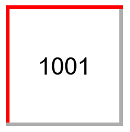
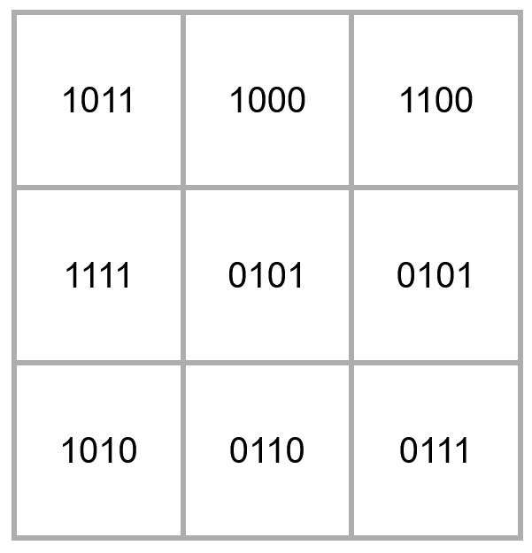

Project 1
Micromouse Simulation Guide
By Jeremiah Yong
Overview
I hope you're excited to start the software portion of Micromouse! In this lesson, you will learn how to install and configure the Micromouse maze simulation on your own computer. You’ll obtain the files with git, set up the simulation GUI, and compile all the necessary files to successfully run a mouse simulation.
We will also begin to cover the concepts that the mouse uses to traverse the maze, starting with three foundational variables the mouse must know upon entering a maze cell: position, direction, and wall location.
Concepts
Git
Git is a version control system that can be installed on any operating system. This should not be confused with GitHub, an online platform for hosting Git repositories. We will be using Git to save software progress, revert to previous versions when necessary, and to share code with teammates.
When you add git to a project, this is called a git repository. Every git repository lives in two areas:
The Remote Repository
Simply put, the remote repository of any git project is hosted online and should contain the public, published code. This is what is displayed on the github, available for anybody to access (unless your repository is private).
The Local Repository
The local repository is hosted locally on your own device, and is created when you clone or initialize your own repository for a project. When you clone a remote repository from github it is copied over to your local computer, and you can make changes, add, remove, and (hopefully not) break things.
When you have reached a milestone in your code, it is always a good idea to push your local changes to the remote repository. This updates the remote repository with the code you just wrote.
C/C++ Compilation
In order to use the simulator, we will need to compile and run the files we make. The job of a compiler is to take human-readable code and translate it to machine code so that the computer can process it. This involves a program called gcc (GNU Compiler Collection), which supports compilation for various languages, namely C and C++.
When we use build commands like ‘gcc Main.cpp’, we are really using a compiler to translate our human-readable C++ code into a machine-readable executable. At the highest level, a compiler is simply a translator between human code (C/C++) and machine code (1’s and 0’s).
Running 'gcc Main.cpp -o out' in the terminal will produce a .file called out.exe, which we can run by typing ./out.exe. The simulation GUI takes care of this for us, by using the build and run configurations.
Note: We will write the simulation code in C++, and then replace it with C when running it on the micro-controller. This is because the simulator API uses C++ to function, while getting data from IR sensors and motor encoders uses C.
mms
mms is a Micromouse simulator that makes it easy to write and test maze-solving code without a physical robot and maze. It is legacy software that we will be using to design our floodfill and navigation algorithms. It comes with an API…
API.cpp
The API used is a legacy file that comes with the simulation. It provides useful abilities such as turnLeft, setWall, setText, and more. Later on, the API calls will be replaced with your own functions that will draw from hardware to run.
Installation Instructions
-
Navigate to the Micromouse simulation github here.
This is the Github repository containing all the files and information needed to set up a working Micromouse simulator.
- Navigate to Download->Releases.
Here, you must decide how to organize your code. Since the build and run commands use exact paths, we need to make sure that our files are organized well! We recommend making a specific folder that will contain all of your .cpp/.hpp files. Note that file structure can be changed later down the line, but you will need to change all of your build/run commands as well.
- 1. From releases, download windows.zip
- 2. Unzip and move the mms folder to your project folder (See example above).
- 3. Run mms.exe.
- 1. From releases, download the macos.zip.
- 2. Double-click and unzip it, then move the unzipped folder to Application
-
3. Go to Application and double-click mms to open the simulator
If mms cannot be opened because "The developer cannot be verified” appears, Control+click the app, then select Open twice
-
4. Remaining in the project directory, use the following command to clone into the C++ mms simulator:
git clone this tutorial
- 5. Move API.cpp,API.h, and Main.cpp into your new software folder. This will be your homebase.
-
6. Navigate back to the simulator and press the + button to configure a new algorithm.
- Name: What you want the algorithm to be called. e.g. ‘test’ or ‘v1.0’ (can be changed later)
- IMPORTANT: Don’t use spaces in your path names
- Use front slashes
- Directory: The path to your software folder
- Make sure there are no stray spaces
- Build Command: g++ -std=c11 API.cpp Main.cpp
- Run Command: Navigate to the same path used in step ‘b’ and add \a.exe at the end.
- If that doesn’t work, try \a.out
Resolving Errors
- Check if your device has gcc/g++ or not by typing gcc --version and g++ --version in terminal
- Follow this tutorial to install the g++/gcc compiler(s)
- Check if your device has gcc/g++ or not by typing gcc --version and g++ --version in terminal
- To install clang (recommended), type in terminal: xcode-select --install
- To install gcc, type in terminal: brew install gcc
- To see where clang or gcc is installed, type in terminal:
- which clang
- which gcc
Double check for spaces/errors in build command and directory path! I first experienced an error because I had an extra space inside my build command.
Additional Mazes
- Navigate to the Micromouse simulation github here.
- Click on src -> resources, then download the mazes folder. Once it has finished, place it in your Micromouse folder.
- Find maze files in the github
- Choose any maze in the classic or training mazes
- Copy maze text into a .txt or .map file, and save it in your maze directory
Maze & Mouse Interaction
The first step to build a working navigation algorithm is to understand how the maze will be represented. From the mouse's perspective when it enters a cell, there are three big variables to keep track of: position, direction, and wall count. We need to be able to answer the following questions upon entering a new cell:
- Where are we in the maze?
- What direction are we facing?
- How many walls are in this cell?
Position: Where are we again?
To begin calculating position, we first need to understand our constraints. The official Micromouse rules state that each maze is 16x16 cells, where the mouse must always start in the starting cell (one of the four corner cells, always bounded by 3 walls). The mouse will always start with the boundary of the maze behind it and to the left.
The position of our mouse can be understood as the X and Y coordinates of the mouse’s current cell. In simulation, this will be as simple as setting members for a mouse struct - in real life, not so much. But more on that later.
Direction: Never Eat Shredded Worms
Since the mouse will always start in the same scenario, we can always assume that the initial direction it faces is North. The other directions are set respectively.
Cell Walls: Binary Representations
In order to represent the walls, we will use a four bit binary value. The wall values are as follows:
When a cell has multiple walls, these values are binary OR’ed together. For example, if the wall value is 1001, this means that the cell looks like this:
Let's do a practice problem: Where are the walls in the following maze?
To Keep in Mind:
- As the mouse changes direction, the north wall will not be in front of the mouse anymore. In other words, it will not be north of the mouse.
- Each cell registers the same wall twice. For example, if cell 0110 is above cell 1001, the shared wall will be registered in both cells.